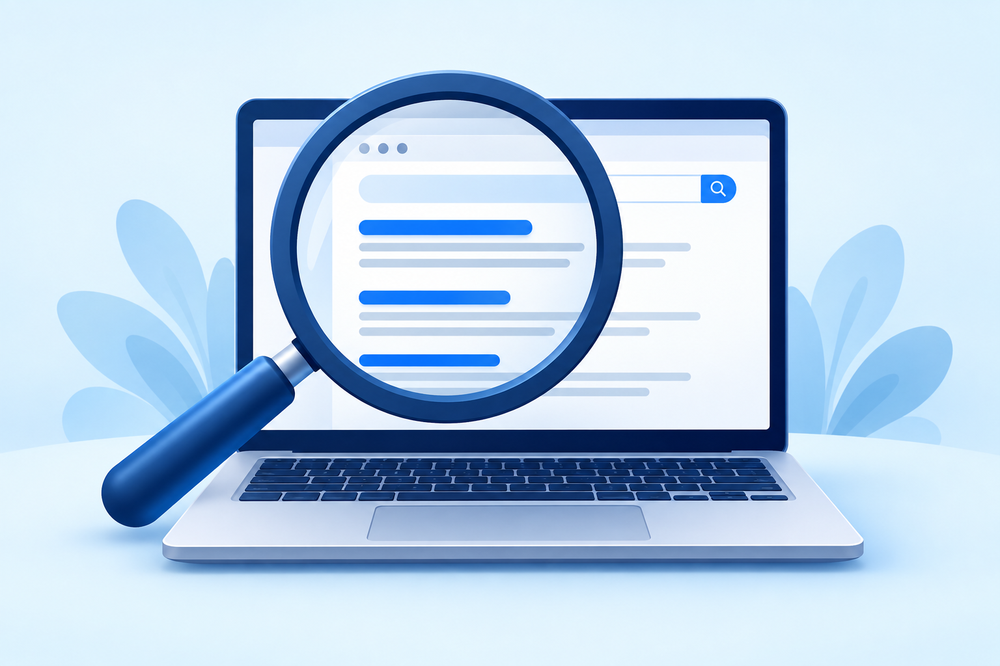
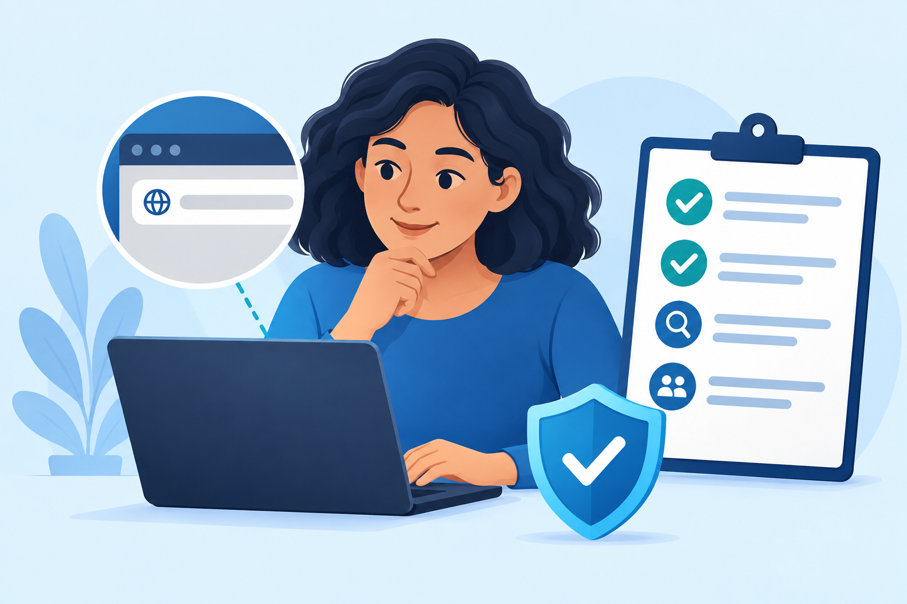
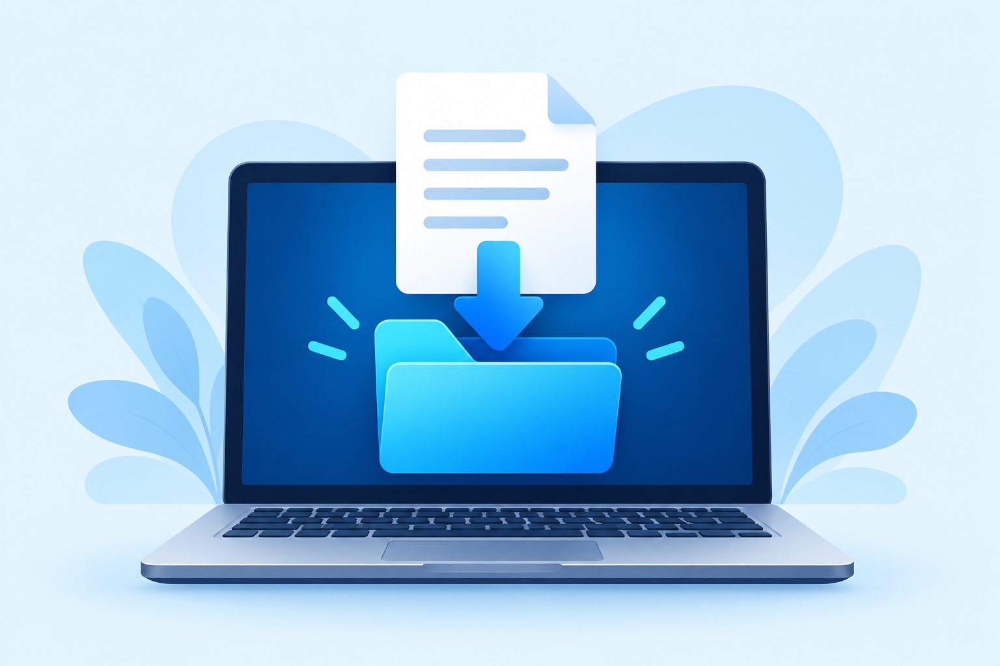

Utilização de navegadores
Conheça as abas, a barra de endereço e os botões de navegação.
Abrir aula 1INTERNET BÁSICA
Seis aulas para navegar com mais confiança.
Marque cada aula como concluída ao terminar. O progresso não é salvo ao fechar a página.
Conheça as abas, a barra de endereço e os botões de navegação.
Abrir aula 1

Confira o endereço, a fonte e os sinais de alerta de um site.
Abrir aula 3
Preencha campos, confira informações e proteja seus dados.
Abrir aula 5AULA 01 DE 06
O navegador é o programa usado para abrir sites. Chrome, Firefox, Edge e Safari são exemplos. Um site é uma página ou conjunto de páginas que você visita usando esse programa.
Fica na parte superior. Você pode digitar o endereço de um site ou palavras para pesquisar. Confira o que digitou antes de continuar.
Permitem abrir várias páginas na mesma janela. Abrir uma nova aba ajuda a consultar outra página sem perder a primeira.
Voltar retorna à página anterior daquela aba. Atualizar carrega a página novamente; em formulários, isso pode apagar informações ainda não enviadas.
A participação é opcional. Escolha uma resposta para receber o retorno.
AULA 02 DE 06
Um mecanismo de busca ajuda a encontrar páginas usando palavras. Google, Bing e outros serviços exibem resultados relacionados à pesquisa. A ordem dos resultados não garante que a informação esteja correta.
Inclua o assunto e um detalhe importante. Por exemplo, “biblioteca municipal horário de funcionamento” é mais preciso do que apenas “biblioteca”.
Confira o título, o endereço e o resumo do resultado. Resultados identificados como patrocinados são anúncios.
Veja quem publicou a informação, quando ela foi atualizada e se outras fontes confiáveis concordam. Para serviços públicos, procure a página oficial do órgão.
A participação é opcional. Escolha uma resposta para receber o retorno.
AULA 03 DE 06
Antes de informar dados ou baixar algo, confira o endereço do site e quem é responsável pelo conteúdo. Uma aparência bonita, um logotipo conhecido ou uma conexão HTTPS, sozinhos, não provam que a página é confiável.
Observe letras trocadas, palavras extras e endereços diferentes do oficial. Se tiver dúvida, abra uma nova aba e digite o endereço oficial que você já conhece.
Procure identificação do responsável, informações de contato e a data do conteúdo. Compare o endereço com canais oficiais da organização.
HTTPS protege a conexão entre o navegador e o site, mas um site falso também pode usar HTTPS. Promessas exageradas e pedidos urgentes de dados exigem cuidado.
A participação é opcional. Escolha uma resposta para receber o retorno.
AULA 04 DE 06
Fazer download significa receber um arquivo da internet no seu dispositivo. Pode ser um documento, uma imagem ou um programa. Baixar e abrir ou instalar um arquivo são ações diferentes.
Prefira o site oficial do responsável pelo arquivo ou uma loja oficial do dispositivo. Evite anúncios que imitam botões de download.
Veja o nome, o tipo e se você realmente esperava aquele conteúdo. Se um arquivo parecer estranho ou o navegador mostrar um alerta, pare e verifique a origem.
Arquivos baixados costumam ir para a pasta Downloads, mas o navegador pode perguntar onde salvar. Não abra nem instale algo desconhecido só porque o download terminou.
A participação é opcional. Escolha uma resposta para receber o retorno.
AULA 05 DE 06
Formulários são conjuntos de campos para enviar informações, como nome, e-mail ou uma solicitação. Antes de preencher, confira se você está no site correto e entenda para que os dados serão usados.
Observe os rótulos e instruções. Um asterisco costuma indicar um campo obrigatório, mas confira a explicação do próprio formulário.
Desconfie de pedidos que não combinam com o serviço. Nunca envie sua senha de e-mail ou um código de acesso por um formulário estranho.
Confira nomes, números e endereço de e-mail. Leia avisos e opções de consentimento. Após enviar, procure uma confirmação ou número de protocolo, quando houver.
A participação é opcional. Escolha uma resposta para receber o retorno.
AULA 06 DE 06
Mensagens falsas podem tentar provocar medo ou pressa para conseguir seus dados. Pare antes de clicar, confira a origem e procure ajuda quando não tiver certeza.
Avisos de prêmio, ameaça de bloqueio ou pedidos inesperados de pagamento podem ser golpes. Confirme a situação por um canal oficial conhecido.
Leia pedidos para acessar câmera, microfone, localização ou notificações. Autorize apenas quando fizer sentido para a atividade que você está realizando.
Mantenha o navegador e o sistema atualizados. Em um computador compartilhado, saia da sua conta e evite salvar senhas. A navegação privada não torna você anônimo na internet.
A participação é opcional. Escolha uma resposta para receber o retorno.